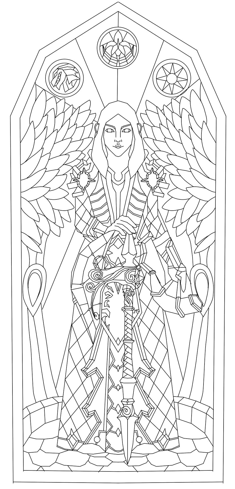
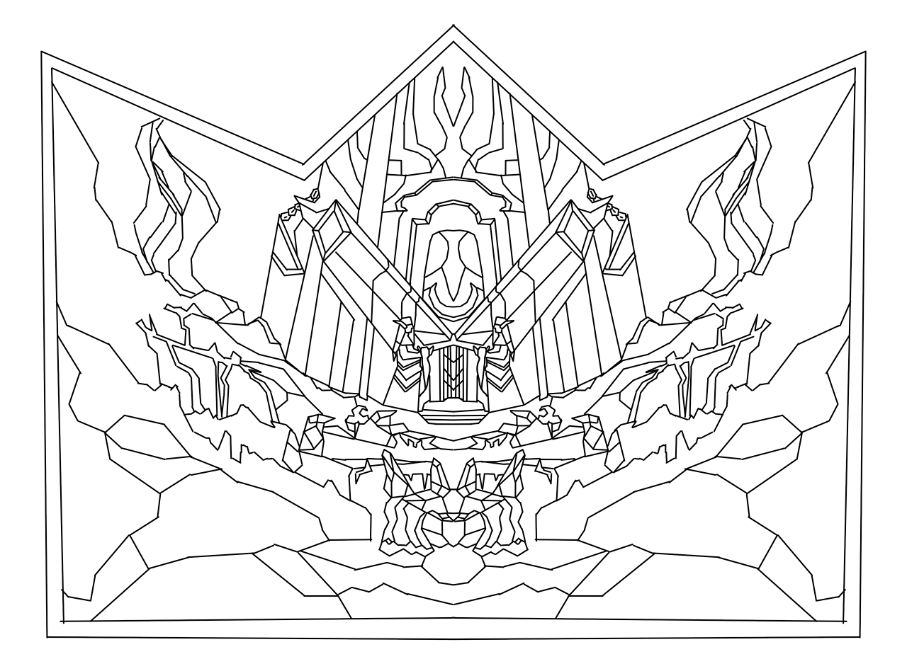
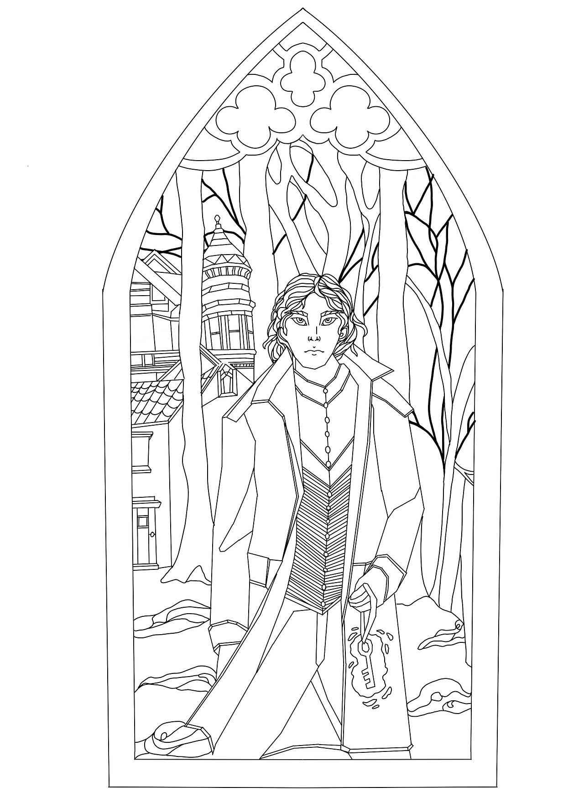
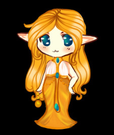
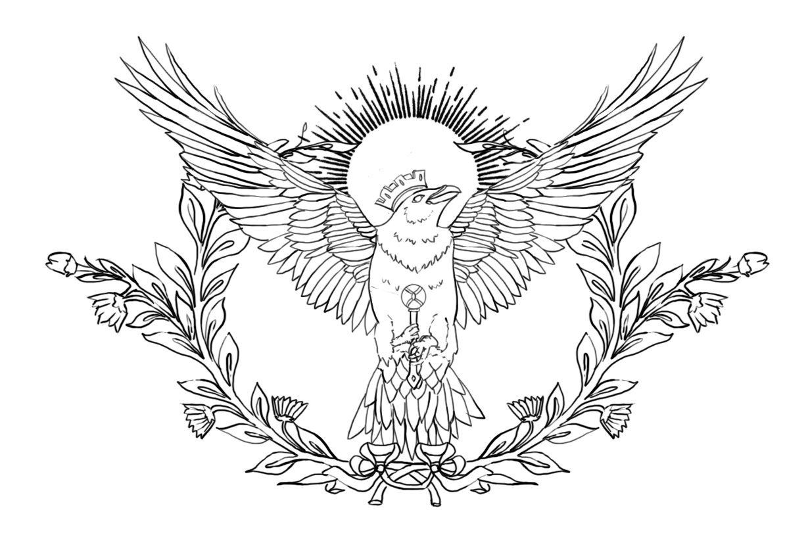

Herald of War - Character Art

This began the expieriments with stainglass windows as a style for drawing. With its simple designs it makes it much easier to produce graphics that can be colored in by Dungeons and Dragons Players.
Tomb of the Demon - Background

This was an attempt at progressing through the backgrounds for the portrait maker. With its reflected sides, it is much easier for production.
Man in the Woods - Character Art

This artwork was created to test the way the figures interact with the backgrounds. I am considering at this point making windows the frames for the portrait maker itself.
Chibi Character Art

This was testing the mass coloring capabilities. It was primarily geared towards color theory and less a practical application into the HTML5 side of things.
House Crest - Lightborn

This was meant to test a different line art style. It has a more natural feel to it but does not promise to be very web capable.